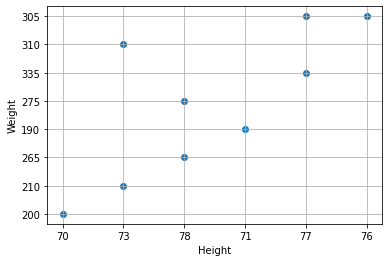
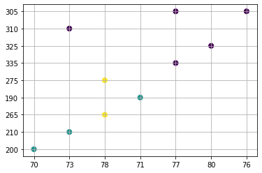
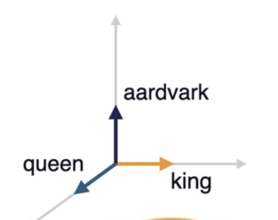
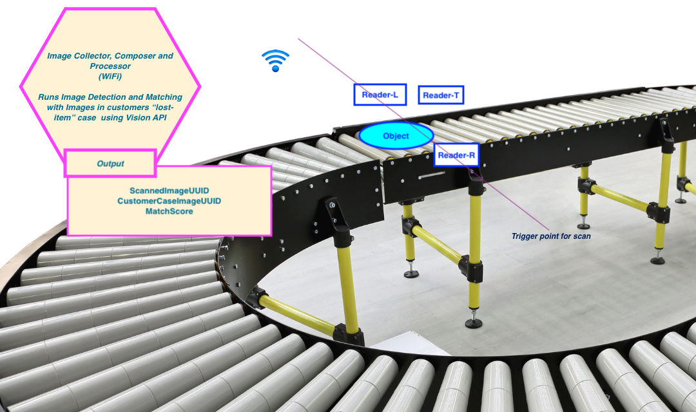

Chapter 1 : Quick Introduction
- In traditional programming we start with data and hard-coded rules to apply on the data to get answers.
- This style of programming can't bring answers easily for problems like:
- predicting a type of a cat in the given animal picture
Assume you need to write a program find out the given animal is cat or dog. Traditional way will be something like this:
def detect_colors(image):
# lots of code
def detect_edges(image):
# lots of code
def analyze_shapes(image):
# lots of code
def guess_texture(image):
# lots of code
def define_animal():
# lots of code
def handle_probability():
# lots of code
So, we will be writing lot of hard-corded rules!
It would be great if write a algorithm (say Classifier) which can figure out rules for us based on the data we provided (data-driven rules), so we do not have to write those rules by hand.
So it is trained on the Data and rules are written based on the provided data
So when we provide:
-
Input: Data (say cat's image) : cat image
-
The program takes in the given the cat image
-
Output: Predicted animal name - Persian Cat with probability 89.178%
As shown in the demo below, the user provides a image of the cat, the application predicts type of the cat in that image with a confidence (probability) with help of a Machine Learning Model.
Cool?

To build this kind of solution using traditional programming, we may have to write too many rules or sometimes this problem is not easily solvable by our traditional programming. Here comes our hero Machine Learning to our rescue us!
What is special about Machine Learning ?
How long it will take to write the code based on hard-coded rules for this task:
- Solving Rubik’s Cube with a single Robot Hand using our traditional programming?
Steps in the ML
Goal: Create an accurate Model that answers our questions most of time
Step-1 - Gathering Data
- To train a ML Model we need to:
- Collect data to train on
Step-2 - Data Preparation
- Load the data and visualize it
- Check for data errors and data imbalances
- Split the data into 2 parts
-
- Training Data (80%)
-
- Testing Data (20%)
-
Step-3 - Choosing a Model
In our case, we can use a linear model.
Step-4 - Training the Model
Model
-
\(y = mx + b\)
-
\(x\) is the input
-
\(y\) is the output (prediction)
The values we are to going to adjust the training are:
-
\(m\) (weight) and \(b\) (bias)
-
Start the training by initializing \(m\) (weight) and \(b\) (bias) with some random values
-
At the beginning, the Model will perform very poorly
- We compare the model's output \(y\) with what it should have produced (target value of y)
- We will adjust values of \(m\) (weight) and \(b\) (bias) so that we get more accurate predictions on the next time around
- This error correction repeats...
- Each iteration updates \(m\) (weight) and \(b\) (bias) - called one training step
- We will stop the training once we got the good accuracy (low error)
Step-5 - Evaluating the Model
- We can check the fitness of our Model using Evaluation
- We test our Model against the Testing Data we created in Step-2
- We are testing the model against data the Model has not seen yet (simulating the real-world situation)
Step-6 - Parameter Tuning
Parameters (AKA hyper-parameters) we can tune:
- How many times we run through the training dataset?
- Learning Rate
- How far we did the error correction based on the information from the previous training step
These parameters determine:
- Accuracy of our Model
- How long it takes to train the Model
How we initialized the Model affects the Model training time - Random values or - Zero values
Step-7 - Predication/Inference
We can use our Model to predict the values for the given input. Power here is we can predict the values for the given input with our Model - not by human judgement and manual rules
Videos
Supervised Learning
- Given a set of feature/label pairs
- Find a model predicts the label associated with a previously unseen input
Unsupervised Learning
- Given a set of feature vectors (without labels)
- Group them into natural clusters or create labels for groups
Here are some data on the New England Patriots and let us see how we can use clustering to create groups.
Features:
Name, height, weight
Labeled by type of position
Receivers: (label)
edelman = ['edelman’, 70, 200] <---- Feature vector
hogan = ['hogan', 73, 210]
gronkowski = ['gronkowski', 78, 265]
amendola = ['amendola’, 71, 190]
bennett = ['bennett’, 78, 275]
Linemen: (label)
cannon = ['cannon’, 77, 335]
solder = ['solder', 80, 325]
mason = ['mason’, 73, 310]
thuney = ['thuney', 77, 305]
karras = ['karras', 76, 305]
# r: receiver, l: linemen
ne_fb_players = [["edelman", 70, 200, "r"],
["hogan", 73, 210, "r"],
["gronkowski", 78, 265, "r"],
["amendola", 71, 190, "r"],
["bennett", 78, 275, "r"],
["cannon", 77, 335, "l"],
["solder", 80, 325, "l"],
["mason", 73, 310, "l"],
["thuney", 77, 305, "l"],
["karras", 76, 305, "l"]
]
import numpy as np
import matplotlib.pyplot as plt
nep_dataset = np.array(ne_fb_players)
plt.scatter( nep_dataset[:, 1], nep_dataset[:, 2])
plt.xlabel("Height")
plt.ylabel("Weight")
plt.grid()
plt.show()

X = nep_dataset[:, 1:3]
print (X)
kmeans = KMeans(n_clusters=2, random_state=0).fit(X)
kmeans.labels_
[['70' '200']
['73' '210']
['78' '265']
['71' '190']
['78' '275']
['77' '335']
['80' '325']
['73' '310']
['77' '305']
['76' '305']]
array([1, 1, 0, 1, 0, 0, 0, 0, 0, 0], dtype=int32)
As we the first 2 items and 4th item are in one cluster while all others in the second cluster
plt.scatter(X[:, 0], X[:, 1], c=y_kmeans, s=50, cmap='viridis')
# colormap viridis: https://matplotlib.org/stable/tutorials/colors/colormaps.html
plt.grid()
plt.show()

If we want to group them into 3 clusters, we need to provide n_clusters=3 as shown below:
kmeans = KMeans(n_clusters=3, random_state=0).fit(X)

K-Means
Chapter 2 - Basic Linear Algebra needed for ML
As we know computer are comfortable in dealing with numbers and perform fast operations on those numbers to provide us the results we are interested in. But in our real world we deal with things like words, sentences and images. This creates an impedance mismatch. So obvious solution will be to solve this mismatch is by representing our things in numbers, let us call this as Data Representations.
Linear Algebra what we learned in our high school math class comes to save us here!
In this chapter, we will have a friendly introduction to Linear Algebra.
If you did not have a chance to learn Linear Algebra in your high school, do not worry, I will try to explain in a simplest possible way to understand the Data Representations concepts so we can do Machine Learning work.
"Simplicity is the ultimate sophistication" - Leonardo da Vinci
Let us use Vectors for Data Representations
Ok, what is a Vector?
- Vector is one Dimensional Array of numbers
- It has magnitude (value) and direction

- Example vector with 3 entries
v1 = [1, 2, 3]
When we say n-dimensional vector space we mean this space consists of all vector with n entries. In our vector with 3 entries, 3-dimensional vector space will consist of all the vectors with 3 entries.
Another name vector space is feature, let me explain that in few moments...
How you can draw a point 3D space
from mpl_toolkits import mplot3d
import numpy as np
import matplotlib.pyplot as plt
# width by height here are 10 inches by 10 inches
fig = plt.figure(figsize=(10,10))
# 3d projection
# with position (pos) of subplot as num-of-rows:1, num-of-cols:1, index-of-subplot:1
# If no positional arguments are passed, defaults to (1, 1, 1).
ax = fig.add_subplot(111, projection='3d')
# plot a point
ax.scatter(2,3,4)
plt.show()

What is a feature Vector?
Entries of the feature vectors represent features of the thing (object) this vector is used to represent.
Example: Assume the thing (object) has 3 features: Color, Heaviness and Shape:
- Color = 2
- say number 1 means it is Red
- say number 2 means it is Green
- say number 3 means it is Blue
- Heaviness : 2
- say number 1 means it is light
- say number 2 means it is medium
- say number 3 means it is heavy
- say number 4 means it is super heavy
- Shape : 1
- say number 1 means it is circle
- say number 2 means it is rectangle
- say number 3 means it is square
- say number 4 means it is cube
So this object with Color: Green, Heaviness: medium and Shape: circle is represented (Data Representation) by this feature vector whose entries are:
fv = [2,2,1]
Another example:
The object here is a Patient with:
- height: 64 inches,
- weight: 131 pounds,
- age: 23 years
The patient vector p:
p = [64, 131, 23]

Now we understand how we can provide Data Representation using Feature Vectors.
The Object I have is an Image, how to do the Data Representations for this?
- Black and White Images
- Black: 0
- White: 1
- Gray: 0 to 255

Now we have words in say English dictionary, how to do the Data Representations for these words
-
Naive way:
- words are discrete and independent tokens
- Build Dictionary or tokens
['aardvark', ... 'king', ..., 'queen', ...]- Since we need to convert words to numbers as part of our Data Representations, we can assign numbers to these words
[0, ... 11000, ... 12000, ...]We will find out these large number are not well suited for ML. We can solve this by using a concept called one-hot-vector
[ [1,0,0,0,...], ... [0,0,0,0…1,0,0…], ... [0,0,0,,0,0…1,0,0…] ] ]These vectors have same dimensionality as the number-of-words in the dictionary.
Suppose the English has 100,000 word, the dimension of the one-hot-vector for each word will be 100,000. In that one-hot-vector only one entry in this vector will be 1 and all other entries will be 0.

Disadvantages with one-hot-vector way of Data Representation
- Very high dimensionality
- Do not capture any world knowledge (like: Gender, Part-of-Speech...) about the words
- example: king and queen are more in common with each other than aardvark
- all of these token have 90 degrees angles between them
- example: king and queen are more in common with each other than aardvark
- Let us take a dictionary with only these 3 words
['aardvark', 'king', 'queen']
-
These 3 words in vectors in above 3-dimensional space
-
They are unit vectors aligned to axes
-
We need to find a way the words to occupy the entire this 3-dimensional space instead of perfectly aligning to the axes.
-
More useful Data Representation of words will be continuous vectors in the n-dimensional space
- This will allow aardvark, king and queen to flow anywhere in this 3-dimensional space. So their representations will be real-values like 0.3, 1.9, -0.4 for aardvark

-
Representing world knowledge (like: Gender, Part-of-Speech...)
-
For example for queen [0.1, -0.3, 1.2, -0.4, 0.02, 1.1, -0.25, ... ]
- First 3 entires can represent the aspect of Gender for example
- Next 3 entires can represent the aspect of Part-of-speech for example
-
This mechanism will help us to express relationships between the words as equal to relative vector distance

- For example, for Gender Dimension, king and queen should be far part as man and woman
- In case of Part-of-speech dimensions, all these words should clustered together at a distance zero, since all of them are nouns
- play (verb) and playful (adjective) should be at the same distance as joy and joyful
How we can learn useful embedding (Data Representations)?
-
Wikipedia comes to rescue us here! It is a reliable source of information we can use to learn the useful embeddings:
- has 28 billion words
- 309 languages
-
If we look at the king and queen in Wikipedia, both them have lot of commonality
- They reference each other, includes common words like monarch
- So Wikipedia has word knowledge we can extract to learn the useful embedding for us
-
Wikipedia is freeform text
- Common practice
- Unsupervised text data ---> supervised task
- we can ask the ML model to fill in the gaps and predict the next word as shown below:
- Common practice
King is the title given to male ______ monarch : 70% body : 20% dog: 10%- The ML model could produce a probability distribution over the word in the vocabulary indicating which ones are more likely to follow the word given so far, in our case it is monarch
2.1. References
3. ML Models
Simple model
\( y = mx + b \)
where
m = slope (gradient)
b = y-intercept
x is the independent variable
y is the dependent variable depends on m and b
Plotting the equation
\( y = x*2 + 1 \)

import matplotlib.pyplot as plt
import numpy as np
# setup the plot size 10 inches by 10 inches
fig = plt.figure(figsize=(10,10))
# 1 row, 1 col, and index is 1
ax = fig.add_subplot(111)
# put grid in the plot
plt.grid()
# let us generate x values start from -5 to 5 with 100 samples
x = np.linspace(-5,5,100)
print ('Number of samples = {}' .format(len(x)))
ax.spines['left'].set_position('center')
ax.spines['bottom'].set_position('center')
ax.spines['right'].set_color('none')
ax.spines['top'].set_color('none')
# we need ticks at bottom and left
ax.xaxis.set_ticks_position('bottom')
ax.yaxis.set_ticks_position('left')
## our plot function
def plot_eqn(eqn, color, label):
plt.plot(x, eqn, color, label=label)
# put legend at upper left cornor
plt.legend(loc='upper left')
plot_eqn( x*2 + 1, '-r', 'eqn for x*2 + 1')
#plot_eqn( x*2 - 1, '-b', 'eqn for x*2 - 1')
#plot_eqn( x*2 - 3, ':b', 'eqn for x*2 - 3')
#plot_eqn( x*2 + 3, '--m', 'eqn for x*2 + 3')
## show our plot
plt.show()
What happens when we train a ML model for this equation?
- We provide a training dataset with values for x and y
| x | y |
|---|---|
| 2 | 5 |
| 1 | 3 |
| 7 | 15 |
| ... | ... |
- During the training ML Model calculates the optimum value for m and b variables based on the training dataset we have provided
- Once training completed, ML model is ready for predicting value for y for the given x
You: Hey, model my x value is 2, can you predict the value of y?
Model: Sure, it is 5
Word2Vec
Word2vec is a technique for natural language processing (NLP). Word2vec is used to produce word embeddings.
Uses a neural network model to learn word associations from a large corpus of text.
Once trained, such a model can detect synonymous words or suggest additional words for a partial sentence.
Word2vec represents each distinct word with a particular list of numbers called a vector.
The vectors are chosen carefully such that a simple mathematical function (the cosine similarity between the vectors) indicates the level of semantic similarity between the words represented by those vectors.
Takes in large corpus of text as input and produces a vector space, typically of several hundred dimensions, with each unique word in the corpus being assigned a corresponding vector in the space.
- Word vectors are positioned in the vector space such that words that share common contexts in the corpus are located close to one another in the space.
Papers
- Efficient Estimation of Word Representations in Vector Space
- Distributed Representations of Words and Phrases and their Compositionality
Continuous Bag-of-Words Model
- Predicts the middle word based on surrounding context words.
- The context consists of a few words before and after the current (middle) word. This architecture is called a bag-of-words model as the order of words in the context is not important.
Continuous Skip-gram Model
- Predicts words within a certain range before and after the current word in the same sentence.
Consider the following sentence of 8 words:
The wide road shimmered in the hot sun.
The context words for each of the 8 words of this sentence are defined by a window size. The window size determines the span of words on either side of a target_word (one underlined) that can be considered context word. Take a look at this table of skip-grams for target words based on different window sizes.

Training Objective
- Maximize the probability of predicting context words (w) given the target word (\(w_t\)).
- For a sequence of words \(w_1,w_2, ... w_T\), the objective can be written as the average log probability. where \(c\) is the size of the training context.

Notebooks
Videos
Word embedding
Word embedding is a term used for the representation of words for text analysis, typically in the form of a real-valued vector that encodes the meaning of the word such that: - the words that are closer in the vector space are expected to be similar in meaning
4. Deep Learning
Neural Network
Neural networks is a beautiful biologically-inspired programming paradigm which enables a computer to learn from observational data.
Deep learning, a powerful set of techniques for learning in neural networks.
Provide solutions in :
- image recognition
- speech recognition
- natural language processing (NLP)
Gradient descent
Gradient descent is an optimization algorithm used to:
- minimize some function (cost function) by iteratively moving in the direction of steepest descent as defined by the negative of the gradient.
In machine learning, we use gradient descent to update the parameters (weights and biases) of our model.

- Starting at the top of the mountain, we take our first step downhill in the direction specified by the negative gradient.
- Next we recalculate the negative gradient (passing in the coordinates of our new point) and take another step in the direction it specifies.
- We continue this process iteratively until we get to the bottom of our graph, or to a point where we can no longer move downhill.
Learning Rate
The size of these steps is called the learning rate.
With a high learning rate we can cover more ground each step, but we risk overshooting the lowest point since the slope of the hill is constantly changing.
With a very low learning rate, we can confidently move in the direction of the negative gradient since we are recalculating it so frequently. A low learning rate is more precise, but calculating the gradient is time-consuming, so it will take us a very long time to get to the bottom.
Cost function
-
It is a loss function.
-
It is a measure of how wrong the model is in terms of its ability to estimate the relationship between x and y
-
It is a measure of how far we are away from the target:
- \(y - (mx + b)\)
- Cost function :
- \[ f(m,b) = \frac{1}{N} \sum_{i=0}^n (y_i - (mx_i + b))^2 \]
-
This tells us how bad our model is at making predictions for a given set of parameters.
The cost function has its own curve and its own gradients. The slope of this curve tells us how to update our parameters (weight) to make the model more accurate.
We run gradient descent using our cost function.
- Calculate the partial derivatives of the cost function \( f(m,b) \) with respect to each parameter( m and b) and store the results in a gradient.
- This new gradient tells us the slope of our cost function at our current position (current parameter values) and the direction we should move to update our parameters (m and b).
Derivative
Derivative of a function of a real variable measures the sensitivity to change of the function value (output value) with respect to a change in its argument (input value).

The slope of the tangent line is equal to the derivative of the function at the marked point.
Partial derivative
-
Partial derivative of a function of several variables (in our case m and b) is:
- its derivative with respect to one of those variables.
-
with respect to m (weight): \( \frac{df}{dm}\)
- -2x(y - (mx + b))
- \[ \frac{1}{N} \sum_{i=0}^n -2x_i(y_i - (mx_i + b)) \]
-
with respect to b (bias): \( \frac{df}{db}\)
- -2(y - (mx + b))
- \[ \frac{1}{N} \sum_{i=0}^n -2(y_i - (mx_i + b)) \]
# Y is target for the given input X
# mx + b is predicted
# learning_rate is size of the steps
def update_weights(m, b, X, Y, learning_rate):
m_deriv = 0
b_deriv = 0
N = len(X)
for i in range(N):
# Calculate partial derivatives
# -2x(y - (mx + b))
m_deriv += -2*X[i] * (Y[i] - (m*X[i] + b))
# -2(y - (mx + b))
b_deriv += -2*(Y[i] - (m*X[i] + b))
# We subtract because the derivatives point in direction of steepest ascent
m -= (m_deriv / float(N)) * learning_rate
b -= (b_deriv / float(N)) * learning_rate
return m, b
Back Propagation
Calculus
Activation Function
Activation function is a function that is added into an artificial neural network in order to help the network learn complex patterns in the data.
When comparing with a neuron-based model that is in our brains, the activation function is at the end deciding what is to be fired to the next neuron
Sigmoid function
A sigmoid function is a mathematical function having a characteristic "S"-shaped curve or sigmoid curve.

- \( \sigma(x) = \frac{1}{1 + e^{-x}}\)
import math
import matplotlib.pyplot as plt
import numpy as np
def sigmoid(x):
a = []
for item in x:
a.append(1/(1 + math.exp(-item)))
return a
x = np.arange(-10., 10., 0.2)
sig = sigmoid(x)
# plot sig
plt.plot(x,sig)
plt.show()
Hyperbolic tangent activation function
It is also referred the \(Tanh\) (also “tanh” and “TanH“) function. It is very similar to the sigmoid activation function and even has the same S-shape. The function takes any real value as input and outputs values in the range -1 to 1.
# plot for the tanh activation function
from math import exp
import matplotlib.pyplot as plt
# tanh activation function
def tanh(x):
return (exp(x) - exp(-x)) / (exp(x) + exp(-x))
# define input data
inputs = [x for x in range(-10, 10)]
# calculate outputs
outputs = [tanh(x) for x in inputs]
# plot inputs vs outputs
plt.plot(inputs, outputs)
plt.grid()
plt.show()

Refer: How to Choose an Activation Function for Deep Learnin
Softmax
from numpy import exp
# softmax activation function
def softmax(x):
return exp(x) / exp(x).sum()
# define input data
inputs = [1.0, 3.0, 2.0]
# calculate outputs
outputs = softmax(inputs)
# report the probabilities
print(outputs)
# report the sum of the probabilities
print(outputs.sum())
[0.09003057 0.66524096 0.24472847]
1.0
Rectified Linear Activation Function
A node or unit that implements this activation function is referred to as a rectified linear activation unit, or ReLU for short.
# demonstrate the rectified linear function
# rectified linear function
def rectified(x):
return max(0.0, x)
# demonstrate with a positive input
x = 1.0
print('rectified(%.1f) is %.1f' % (x, rectified(x)))
x = 1000.0
print('rectified(%.1f) is %.1f' % (x, rectified(x)))
# demonstrate with a zero input
x = 0.0
print('rectified(%.1f) is %.1f' % (x, rectified(x)))
# demonstrate with a negative input
x = -1.0
print('rectified(%.1f) is %.1f' % (x, rectified(x)))
x = -1000.0
print('rectified(%.1f) is %.1f' % (x, rectified(x)))
Plotting
# plot inputs and outputs
from matplotlib import pyplot
# rectified linear function
def rectified(x):
return max(0.0, x)
# define a series of inputs
series_in = [x for x in range(-10, 11)]
# calculate outputs for our inputs
series_out = [rectified(x) for x in series_in]
# line plot of raw inputs to rectified outputs
pyplot.plot(series_in, series_out)
pyplot.show()

Convolutional Neural Networks
Resources
-
[Hardware and Software][http://cs231n.stanford.edu/slides/2021/lecture_6.pdf]
-
Convolutional Neural Networks - Lecture-7 - Training Neural Networks - Part-1s
-
Convolutional Neural Networks - Lecture-7 - Training Neural Networks - Part-2
Recurrent Neural Networks
Generative Models
Given training data, generate new samples from same distribution
References
MNIST
The MNIST database Modified National Institute of Standards and Technology database is a large database of handwritten digits that is commonly used for training various image processing systems.

Sample Application for handwritten digit recognition
5. Tensorflow
TensorFlow.js
TensorFlow.js (TFJS) is a library for machine learning in JavaScript. Using TFJS you can develop ML models in JavaScript, and use ML directly in the browser or in Node.js.
Browser
<script src="https://cdn.jsdelivr.net/npm/@tensorflow/tfjs@2.0.0/dist/tf.min.js"></script>
Node.js
# install TensorFlow.js. using npm or yarn
yarn add @tensorflow/tfjs
# Install TensorFlow.js with native C++ bindings.
yarn add @tensorflow/tfjs-node
# if your system has a NVIDIA® GPU with CUDA support, use the GPU package even for higher performance.
yarn add @tensorflow/tfjs-node-gpu
const tf = require('@tensorflow/tfjs');
// Optional Load the binding:
// Use '@tensorflow/tfjs-node-gpu' if running with GPU.
require('@tensorflow/tfjs-node');
// Train a simple model:
const model = tf.sequential();
model.add(tf.layers.dense({units: 100, activation: 'relu', inputShape: [10]}));
model.add(tf.layers.dense({units: 1, activation: 'linear'}));
model.compile({optimizer: 'sgd', loss: 'meanSquaredError'});
const xs = tf.randomNormal([100, 10]);
const ys = tf.randomNormal([100, 1]);
model.fit(xs, ys, {
epochs: 100,
callbacks: {
onEpochEnd: (epoch, log) => console.log(`Epoch ${epoch}: loss = ${log.loss}`)
}
});
6. PyTorch
PyTorch is an open source machine learning library based on the Torch library, used for applications such as :
- computer vision
- natural language processing primarily developed by Facebook's AI Research lab.
Quick Start
7. Transformers
A transformer is a deep learning model that adopts the mechanism of self-attention, differentially weighting the significance of each part of the input data.
Like recurrent neural networks (RNNs), transformers are designed to handle sequential input data, such as natural language, for tasks such as translation and text summarization. However, unlike RNNs, transformers do not necessarily process the data in order. Instead the attention mechanism provides context for any position in the input sequence.
For example, if the input data is a natural language sentence, the transformer does not need to process the beginning of the sentence before the end. Rather, it identifies the context that confers meaning to each word in the sentence. This feature allows for more parallelization than RNNs and therefore reduces training times.
Before transformers, most state-of-the-art NLP systems relied on gated RNNs, such as LSTM and gated recurrent units (GRUs), with added attention mechanisms.
Transformers are built on these attention technologies without using an RNN structure, highlighting the fact that attention mechanisms alone can match the performance of RNNs with attention.
Gated RNNs process tokens sequentially, maintaining a state vector that contains a representation of the data seen after every token.
To process the nth token, the model combines the state representing the sentence up to token n-1 with the information of the new token to create a new state, representing the sentence up to token n.
Theoretically, the information from one token can propagate arbitrarily far down the sequence, if at every point the state continues to encode contextual information about the token.
In practice this mechanism is flawed: the vanishing gradient problem leaves the model's state at the end of a long sentence without precise, extractable information about preceding tokens.
This problem was addressed by attention mechanisms. Attention mechanisms let a model draw from the state at any preceding point along the sequence.
The attention layer can access all previous states and weigh them according to a learned measure of relevancy, providing relevant information about far-away tokens.
A clear example of the value of attention is in language translation, where context is essential to assign the meaning of a word in a sentence. In an English-to-French translation system, the first word of the French output most probably depends heavily on the first few words of the English input. However, in a classic LSTM model, in order to produce the first word of the French output, the model is given only the state vector of the last English word. Theoretically, this vector can encode information about the whole English sentence, giving the model all necessary knowledge. In practice, this information is often poorly preserved by the LSTM. An attention mechanism can be added to address this problem: - the decoder is given access to the state vectors of every English input word, not just the last, and can learn attention weights that dictate how much to attend to each English input state vector.
Transformers use an attention mechanism without an RNN
- processing all tokens at the same time
- calculating attention weights between them in successive layers.
Vanishing Gradient problem
In machine learning, the vanishing gradient problem is encountered when training artificial neural networks with gradient-based learning methods and backpropagation. - In such methods, each of the neural network's weights receives an update proportional to the partial derivative of the error function with respect to the current weight in each iteration of training. - The problem is that in some cases, the gradient will be vanishingly small, effectively preventing the weight from changing its value - In the worst case, this may completely stop the neural network from further training
BERT
BERT, which stands for Bidirectional Encoder Representations from Transformers, is based on Transformers, a deep learning model in which every output element is connected to every input element, and the weightings between them are dynamically calculated based upon their connection.
BERT is a technology to generate contextualized word embeddings/vectors, which is its biggest advantage but also it's biggest disadvantage as it is very compute-intensive at inference time, meaning that if you want to use it in production at scale, it can become costly.
Transformer encoder reads the entire sequence of words at once. Therefore it is considered bidirectional, though it would be more accurate to say that it’s non-directional. This characteristic allows the model to learn the context of a word based on all of its surroundings (left and right of the word)
- BERT: Pre-training of Deep Bidirectional Transformers for Language Understanding
- The Illustrated BERT, ELMo, and co. (How NLP Cracked Transfer Learning)
- Hugging face - BERT
GPT
Generative Pre-trained Transformer (GPT)
GPT-2
GPT-2 is a large transformer-based language model with 1.5 billion parameters, trained on a dataset of 8 million web pages. GPT-2 is trained with a simple objective:
- predict the next word, given all of the previous words within some text.
- The diversity of the dataset causes this simple goal to contain naturally occurring demonstrations of many tasks across diverse domains.
- GPT-2 is a direct scale-up of GPT, with more than 10X the parameters and trained on more than 10X the amount of data.
" We (OpenAI) created a new dataset which emphasizes diversity of content, by scraping content from the Internet. In order to preserve document quality, we used only pages which have been curated/filtered by humans—specifically, we used outbound links from Reddit which received at least 3 karma. This can be thought of as a heuristic indicator for whether other users found the link interesting (whether educational or funny), leading to higher data quality than other similar datasets, such as CommonCrawl."
GPT-2 algorithm was trained on the task of language modeling--- which tests a program's ability to predict the next word in a given sentence--by ingesting huge numbers of articles, blogs, and websites. By using just this data it achieved state-of-the-art scores on a number of unseen language tests, an achievement known as zero-shot learning. It can also perform other writing-related tasks, like translating text from one language to another, summarizing long articles, and answering trivia questions.
Zero-shot learning
Zero-shot learning (ZSL) is a problem setup in machine learning, where at test time, a learner observes samples from classes that were not observed during training, and needs to predict the class they belong to.
GPT-3
Generative Pre-trained Transformer 3 is an autoregressive language model that uses deep learning to produce human-like text.
It is the third-generation language prediction model in the GPT-n series created by OpenAI.
GPT-3 is a very large language model (the largest till date) with about 175B parameters. It is trained on about 45TB of text data from different datasets.
- Language Models are Few-Shot Learners
- GPT-3 - paper with code
- Language Models are Unsupervised Multitask Learners
- Better Language Models and Their Implication
T5
GitHub Copilot
When we type this:
function calculateDaysBetweenDates(date1, date2) {
Copilot will complete this function:
function calculateDaysBetweenDates(date1, date2) {
// following lines are written by copilot
var oneDay = 24 * 60 * 60 * 1000;
var date1InMillis = date1.getTime();
var date2InMillis = date2.getTime();
var days = Math.round(Math.abs(date2InMillis - date1InMillis) / oneDay);
return days;
}
\( \int x dx = \frac{x^2}{2} + C \)
\( \int y dy = \frac{y^3}{5} \)
References
Transformers
- Illustrated Guide to Transformers Neural Network: A step by step explanation
- CS480/680 Lecture 19: Attention and Transformer Networks
- LSTM is dead. Long Live Transformers!
Open AI
Codex
- natural language to code
- Creating a Space Game with OpenAI Codex
- OpenAI Codex
Github Copilot
- Trained on billions of lines of public code
- Your AI pair programmer
- VS Code extension
Matplotlib
Matplotlib: Plot a Function y=f(x)
9. Salesforce Einstein
With Salesforce Einstein, we can: • Build custom predictions and recommendations with clicks • Embed predictive insights into any record or in any app • Operationalize AI by adding it to every workflow or business process
Machine Learning
Einstein Discovery
Einstein Discovery automatically provides explanations and makes recommendations based on all your data sources so they can get smart insights, without the need of a data scientist.
Einstein Prediction Builder
Einstein Prediction Builder helps you to predict the business outcomes, such as :
- churn or lifetime value. Create custom AI models on any Salesforce Object field or Object with clicks, not code.
- The big book of customer predictions - Get closer to your customers with Salesforce Einstein
Einstein Next Best Action
Einstein Next Best Action delivers proven recommendations to employees and customers, right in the apps where they work.
- Define recommendations, create action strategies, build predictive models, display recommendations, and activate automation.
Natural Language Processing
Einstein Language
Einstein Language helps you to understand:
- how customers feel,
- automatically route inquiries
- streamline your workflows.
Build natural language processing (NLP) into your apps to classify the underlying intent and sentiment in a body of text, no matter what the language.
Einstein Bots
Einstein Bots helps you to easily build, train, and deploy custom bots on digital channels that are connected to your CRM data.
- Enhance business processes, empower your employees, and delight your customers.
- Einstein for Service: AI-POWERED CUSTOMER SERVICE
Computer Vision
Einstein Vision
Einstein Vision helps you to see the entire conversation about your brand on social media and beyond.
- Use intelligent image recognition in your apps by training deep learning models to recognize your brand, products, and more.
- Get Started Using Deep Learning for Business Users & Techies
10. Google Cloud Platform
Dataflow

11. Processing Units
CPU
CPU is constructed from millions of transistors. It can have multiple processing cores and is commonly referred to as the brain of the computer. It is essential to all modern computing systems as it executes the commands and processes needed for your computer and operating system. The CPU is also important in determining how fast programs can run, from surfing the web to building spreadsheets.
The CPU is suited to a wide variety of workloads, especially those for which latency or per-core performance are important. A powerful execution engine, the CPU focuses its **smaller number of cores on individual tasks and on getting things done quickly. This makes it uniquely well equipped for jobs ranging from serial computing to running databases.
Intel's Sandy Bridge Architecture ( 32 nm micro architecture)

GPU
The GPU is a processor that is made up of many smaller and more specialized cores. By working together, these cores deliver massive performance when a processing task can be divided up and processed across these cores.
GPUs began as specialized ASICs - Application Specific Integrated Circuit developed to accelerate specific 3D rendering tasks.
Over time, these fixed-function engines became more programmable and more flexible. While graphics and the increasingly lifelike visuals of today’s top games remain their principal function, GPUs have evolved to become more general-purpose parallel processors as well, handling a growing range of applications.
Initially GPUs were solving computer graphics related problems in Gaming The General Purpose GPU (GPGPU) plays a vital role in the deep learning and parallel computing.

What is CUDA?
Compute Unified Device Architecture (CUDA) is is a parallel computing platform developed by NVIDIA. It enables software programs to perform calculations using both the CPU and GPU.
TPU - Tensor Processing Units
TPUs are Google’s custom-developed application-specific integrated circuits (ASICs) used to accelerate machine learning workloads.
Designed from the ground up with the benefit of Google’s deep experience and leadership in machine learning.
Enable us to run our machine learning workloads on Google’s TPU accelerator hardware using TensorFlow
Designed for maximum performance and flexibility to help researchers, developers, and businesses to build TensorFlow compute clusters that can leverage CPUs, GPUs, and TPUs.
High-level TensorFlow APIs help us to get models running on the Cloud TPU hardware.
Advantages for using TPUs
-
Cloud TPU resources accelerate the performance of linear algebra computation, which is used heavily in machine learning applications.
-
TPUs minimize the time-to-accuracy when you train large, complex neural network models. Weeks to hours (150 times faster)
- Models that previously took weeks to train on other hardware platforms can converge in hours on TPUs.
TPU v3
A TPU v3 board contains four TPU chips and 32 GiB of HBM. Each TPU chip contains two cores. Each core has a MXU, a vector unit, and a scalar unit.

11. ML Pipelines
ML ops or MLOps
Set of practices that aims to deploy and maintain machine learning models in production reliably and efficiently.
The word MLOps is a compound of machine learning and the continuous development practice of DevOps in the software field.
- Machine learning models are tested and developed in isolated experimental systems.
- When an algorithm is ready to be launched, MLOps is practiced between Data Scientists, DevOps, and Machine Learning engineers to transition the algorithm to production systems.
- MLOps seeks to increase automation and improve the quality of production models, while also focusing on business and regulatory requirements.


Papers
Salesforce TransmogrifAI
- AutoML library for building modular, reusable, strongly typed machine learning workflows on Apache Spark with minimal hand-tuning
- Transmogrification as the process of transforming, often in a surprising or magical manner, which is what TransmogrifAI does for Salesforce
- enabling data science teams to transform customer data into meaningful, actionable predictions
- thousands of customer-specific machine learning models have been deployed across the platform, powering more than 3 billion predictions every day.
TransmogrifAI is a library built on Scala and SparkML that does precisely this.
With just a few lines of code, a data scientist can automate data cleansing, feature engineering, and model selection to arrive at a performant model from which she can explore and iterate further.

Type Safety: The TransmogrifAI Feature type hierarchy

Transmogrification These transformations are not just about getting the data into a format which algorithms can use, TransmogrifAI also optimizes the transformations to make it easier for machine learning algorithms to learn from the data.
- For example, it might transform a numeric feature like age into the most appropriate age buckets for a particular problem — age buckets for the fashion industry might differ from wealth management age buckets.
TransgmogrifAI has algorithms that perform automatic feature validation to remove features with little to no predictive power. - Example: Closed Deal Amount
The TransmogrifAI Model Selector runs a tournament of several different machine learning algorithms on the data and uses the average validation error to automatically choose the best one
TransmogrifAI comes with some techniques for automatically tuning these hyperparameters and a framework to extend to more advanced tuning techniques.
// Read the Deal data
val dealData = DataReaders.Simple.csvCase[Deal](path = pathToData).readDataset().toDF()
// Extract response and predictor Features
val (isClosed, predictors) = FeatureBuilder.fromDataFrame[RealNN](dealData, response = "isClosed")
// Automated feature engineering
val featureVector = predictors.transmogrify()
// Automated feature validation
val cleanFeatures = isClosed.sanityCheck(featureVector, removeBadFeatures = true)
// Automated model selection
val (pred, raw, prob) = BinaryClassificationModelSelector().setInput(isClosed, cleanFeatures).getOutput()
// Setting up the workflow and training the model
val model = new OpWorkflow().setInputDataset(dealData).setResultFeatures(pred).train()
TransmogrifAI is built on top of Apache Spark
-
Able to handle large variation in the size of the data
- Some use cases involve tens of millions of records that need to be aggregated or joined, others depend on a few thousands of records.
-
Spark has primitives for dealing with distributed joins and aggregates on big data
-
Able to serve our machine learning models in both a batch and streaming (Spark Streaming) setting
-
Transmogrification, Feature Validation, and Model Selection above, are all powered by Estimators)
- A Feature is essentially a type-safe pointer to a column in a DataFrame and contains all the information about that column — its name, the type of data it contains, as well as lineage information about how it was derived.
-
TransmogrifAI provides the ability to easily define features that are the result of complex time-series aggregates and joins
-
Features are strongly typed. This allows TransmogrifAI to do type checks on the entire machine learning workflow, and ensure that errors are caught as early on as possible instead of hours into a running pipeline
-
Developers can easily specify custom transformers and estimators to be used in the pipeline
val lowerCaseText = textFeature.map[Text](_.value.map(_.toLowerCase).toText)
Scale and performance
- With automated feature engineering, data scientists can easily blow up the feature space, and end up with wide DataFrames that are hard for Spark to deal with.
- TransmogrifAI workflows address this by inferring the entire DAG of transformations that are needed to materialize features, and optimize the execution of this DAG by collapsing all transformations that occur at the same level of the DAG into a single operation.
Summary
TransmogrifAI enables our data scientists to deploy thousands of models in production with minimal hand tuning and reducing the average turn-around time for training a performant model from weeks to just a couple of hours.
TensorFlow Serving
TensorFlow Serving is a flexible, high-performance serving system for machine learning models, designed for production environments.
TensorFlow Serving makes it easy to deploy new algorithms and experiments, while keeping the same server architecture and APIs.
TensorFlow Serving provides out-of-the-box integration with TensorFlow models, but can be easily extended to serve other types of models and data.
TensorFlow Extended (TFX)
TFX is a Google-production-scale machine learning (ML) platform based on TensorFlow.
It provides a configuration framework and shared libraries to integrate common components needed to define, launch, and monitor your machine learning system.
Apache Airflow
Apache Airflow is a platform to programmatically author, schedule and monitor workflows. TFX (TensorFlow Extended) uses Airflow to author workflows as directed acyclic graphs (DAGs) of tasks.
The Airflow scheduler executes tasks on an array of workers while following the specified dependencies.
Rich command line utilities (CLI) make performing complex surgeries on DAGs a snap. The rich user interface (UI) makes it easy to:
- visualize pipelines running in production,
- monitor progress,
- troubleshoot issues when needed.
When workflows are defined as code, they become more maintainable, versionable, testable, and collaborative.
DAG
DAG (directed acyclic graph) is a directed graph with no directed cycles. That is, it consists of vertices and edges, with each edge directed from one vertex to another, such that following those directions will never form a closed loop.
Apache Beam
Apache Bean help us to implement batch and streaming data processing jobs that run on any execution engine.
Several TFX (TensorFlow Extended) components rely on Beam for distributed data processing. In addition, TFX can use Apache Beam to orchestrate and execute the pipeline DAG.
Beam orchestrator uses a different BeamRunner than the one which is used for component data processing. With the default DirectRunner setup the Beam orchestrator can be used for local debugging without incurring the extra Airflow or Kubeflow dependencies, which simplifies system configuration.

Kubeflow
The Kubeflow project is dedicated to making deployments of machine learning (ML) workflows on Kubernetes simple, portable and scalable.

Kubeflow is an open source ML platform dedicated to making deployments of machine learning (ML) workflows on Kubernetes simple, portable and scalable.
Kubeflow Pipelines is part of the Kubeflow platform that enables composition and execution of reproducible workflows on Kubeflow, integrated with experimentation and notebook based experiences.
Kubeflow Pipelines services on Kubernetes include the hosted Metadata store, container based orchestration engine, notebook server, and UI to help users develop, run, and manage complex ML pipelines at scale.
The Kubeflow Pipelines SDK allows for creation and sharing of components and composition and of pipelines programmatically.
Kubernetes
Kubernetes is an open-source container-orchestration system for automating computer application
- deployment
- scaling
- management
It was originally designed by Google and is now maintained by the Cloud Native Computing Foundation.
References
AutoML
AutoML makes the power of machine learning available to you even if you have limited knowledge of machine learning.
You can use AutoML to build on Google's machine learning capabilities to create your own custom machine learning models that are tailored to your business needs, and then integrate those models into your applications and web sites.
12. Speedup
In this chapter we will see the ways to speed up Machine Learning
12. JAX

JAX is a new library from Google Research. JAX can automatically differentiate native Python and Numpy functions.
- Loops
- Branches
- Recursion
- Closures
- Can take Derivative of Derivatives
- Supports reverse mode differentiation, also known as [Back Propagation] using Grad function
- Supports forward mode differentiation
XLA
XLA is Accelerated Linear Algebra.
-
It is a domain-specific compiler for linear algebra that can accelerate TensorFlow models with potentially no source code changes.
-
Performs optimizations like:
- Fusing operations together (something like consolidation) so the intermediate results do not have to written out the memory. Instead it get streamed into next operation.
- This enable faster and more efficient processing
This is some what crudely equal to nodejs stream: - Refer: TableauCRM CLI using this stream concept, where it loads data from a Oracle SQL Query results directly into Tableau CRM dataset - refer: sfdx mohanc:ea:dataset:loadFromOra
def model (x, y, z): return tf.reduce_sum( x + y * z)
JAX uses XLA to compile and run our Numpy program on GPUs and TPUs
JAX uses JIT (just-in-time) compile of custom functions into XLA optimized kernels using decorator @jit
@jit # jit decorator
def update(params, x, y):
grads = gard(loss)(params, x, y)
return [ (w - step_size * dw, b - step_size * db) for (w, b), (dw, db) in zip (params, grads)]
pmap
- JAX applies pmap (Parallel Map) replicating computations across multiple cores

Autograd
Autograd (https://github.com/hips/autograd) can automatically differentiate native Python and Numpy code.
Functions available for the transformations
- grad
- jit
- pmap
- vmap - automatic vectorization
- allowing us to turn a function which can handle only one data point into a function which can handle batch of these data points of any size with just one wrapper function vmap
Sample - MNIST
import jax.numpy as jnp
from jax import grad, vmap, jit
def predict(params, inputs):
for W, b in params:
outputs = jnp.dot(inputs, W) + b
inputs = jnp.tanh(outputs)
return outputs
def loss (params, batch):
inputs, targets = batch
preds = predict(params, inputs)
return jnp.sum( (preds - targets) **2 ) # SME
gradient_fun = jit(grad(loss))
preexample_grads = vmap(grad(loss), in_axes=(None, 0))
Key Ideas
- Python code is traced into an Intermediate Representation (IR)
- IR can be transformed (automatic differentiation)
- IR enables domain-specific compilation (XLA - Accelerated Linear Algebra)
- Has very powerful transforms
- grad
- jit
- vmap
- pmap
- Python's dynamism makes this possible
- JAX makes use of this dynamism and evaluates a function's behavior by calling it on a tracer value
def sum(x):
return x + 2
class ShapedArray(object):
def __add__ (self, other):
self.record_computation("add", self, other)
return ShapedArray(self.shape, self.dtype) # dtype is like float32
sum( ShapedArray( (2,2), float32 ))

With this IR, JAX knows how to do the transforms like:
- grad
- jit
- vmap
- pmap


TF_CPP_MIN_LOG_LEVEL=0
import jax
import jax.numpy as jnp
global_list = []
def log2(x):
global_list.append(x)
ln_x = jnp.log(x)
ln_2 = jnp.log(2.0)
return ln_x / ln_2
print( jax.make_jaxpr(log2)(3.0) )
- Document
- Output
{ lambda ; a:f32[]. let
b:f32[] = log a
c:f32[] = log 2.0
d:f32[] = div b c
in (d,)
}
Jake on JAX
Closures and Decorators
Python Closures
Let us explain closure by an example:
# This is the outer enclosing function
def print_msg(msg):
def printer():
# This is the nested function
print(msg)
return printer # returns the nested function
# Now let's try calling this function.
another = print_msg("Hello")
another()
# Output: Hello
This technique by which some data in our case "Hello" gets attached to the code - another() is called closure in Python.
Three characteristics of a Python closure are:
- it is a nested function, in our example: printer()
- it has access to a free variable in outer scope, in our example: msg.
- it is returned from the enclosing function, in our example: print_msg()
``
# Python Decorators make an extensive use of closures
Python Decorators
A decorator takes in a function, adds some functionality and returns it.
# a decorator takes in a function, adds some functionality and returns it.
# takes in function to be decorated
def make_pretty(func):
def inner():
print("I got decorated") # getting decorated
func() # back to the given function
return inner
def ordinary():
print("I am ordinary")
# will print: I am ordinary
ordinary()
decorated = make_pretty(ordinary)
decorated()
""" will print:
I got decorated
I am ordinary
"""
# decorator function (make_pretty) has added
## some new functionality to the original function (ordinary)
# annoation way
@make_pretty # syntactic sugar
def ordinary():
print("I am ordinary")
iam_special = ordinary()
""" will print:
I got decorated
I am ordinary
"""
Decorating functions with parameters
# Decorating functions with parameters
def smart_divide(func):
def inner(a, b):
print("I am going to divide", a, "and", b)
if b == 0:
print("Whoops! cannot divide by zero")
return
return func(a, b)
return inner
@smart_divide
def divide(a, b):
print(a/b)
divide(10,2)
""" will print:
I am going to divide 10 and 2
5.0
"""
divide(10,0)
""" will print:
I am going to divide 10 and 0
Whoops! cannot divide by zero
"""
References
13. OpenAI
OpenAI API
Completion
curl https://api.openai.com/v1/engines/davinci/completions \
-H 'Content-Type: application/json' \
-H 'Authorization: Bearer YOUR_API_KEY \
-d '{
"prompt": "Once upon a time",
"max_tokens": 5
}'
- Result
{
"id": "cmpl-4DmYlIcNgBh26avH8t5mMMWwgILGE",
"object": "text_completion",
"created": 1639190275,
"model": "davinci:2020-05-03",
"choices": [
{
"text": ", there was a software",
"index": 0,
"logprobs": null,
"finish_reason": "length"
}
]
}
Search
curl https://api.openai.com/v1/engines/davinci/search \
-H "Content-Type: application/json" \
-H 'Authorization: Bearer YOUR_API_KEY' \
-d '{
"documents": ["White House", "hospital", "school"],
"query": "the president"
}'
{
"object": "list",
"data": [
{
"object": "search_result",
"document": 0,
"score": 215.56
},
{
"object": "search_result",
"document": 1,
"score": 55.614
},
{
"object": "search_result",
"document": 2,
"score": 40.932
}
],
"model": "davinci:2020-05-03"
}
Create Classification
curl https://api.openai.com/v1/classifications \
-X POST \
-H "Authorization: Bearer YOUR_API_KEY" \
-H 'Content-Type: application/json' \
-d '{
"examples": [
["A happy moment", "Positive"],
["I am sad.", "Negative"],
["I am feeling awesome", "Positive"]],
"query": "It is a raining day :(",
"search_model": "ada",
"model": "curie",
"labels":["Positive", "Negative", "Neutral"]
}'
{
"completion": "cmpl-4DmdStcV7tC6o5VJnoihr4TDFHse4",
"label": "Negative",
"model": "curie:2020-05-03",
"object": "classification",
"search_model": "ada",
"selected_examples": [
{
"document": 1,
"label": "Negative",
"text": "I am sad."
},
{
"document": 0,
"label": "Positive",
"text": "A happy moment"
},
{
"document": 2,
"label": "Positive",
"text": "I am feeling awesome"
}
]
}
Answers
curl https://api.openai.com/v1/answers \
-X POST \
-H "Authorization: Bearer YOUR_API_KEY" \
-H 'Content-Type: application/json' \
-d '{
"documents": ["Puppy A is happy.", "Puppy B is sad."],
"question": "which puppy is happy?",
"search_model": "ada",
"model": "curie",
"examples_context": "In 2017, U.S. life expectancy was 78.6 years.",
"examples": [["What is human life expectancy in the United States?","78 years."]],
"max_tokens": 5,
"stop": ["\n", "<|endoftext|>"]
}'
{
"answers": [
"puppy A."
],
"completion": "cmpl-4DmgSrZJ7sQx6lWRbaMyskSN68qCE",
"model": "curie:2020-05-03",
"object": "answer",
"search_model": "ada",
"selected_documents": [
{
"document": 0,
"text": "Puppy A is happy. "
},
{
"document": 1,
"text": "Puppy B is sad. "
}
]
}
List Files
curl https://api.openai.com/v1/files \
-H 'Authorization: Bearer YOUR_API_KEY'
{
"object": "list",
"data": []
}
Upload Files
curl https://api.openai.com/v1/files \
-H "Authorization: Bearer YOUR_API_KEY" \
-F purpose="answers" \
-F file='@puppy.jsonl'
Delete File
curl https://api.openai.com/v1/files/file-XjGxS3KTG0uNmNOK362iJua3 \
-X DELETE \
-H 'Authorization: Bearer YOUR_API_KEY'
Retrieve File Information
curl https://api.openai.com/v1/files/file-XjGxS3KTG0uNmNOK362iJua3 \
-H 'Authorization: Bearer YOUR_API_KEY'
Retrieve File Content
curl https://api.openai.com/v1/files/file-XjGxS3KTG0uNmNOK362iJua3/content \
-H 'Authorization: Bearer YOUR_API_KEY' > file.jsonl
Fine Tunes
- Manage fine-tuning jobs to tailor a model to your specific training data.
curl https://api.openai.com/v1/fine-tunes \
-X POST \
-H "Content-Type: application/json" \
-H "Authorization: Bearer YOUR_API_KEY" \
-d '{
"training_file": "file-XGinujblHPwGLSztz8cPS8XY"
}'
List fine-tunes
curl https://api.openai.com/v1/fine-tunes \
-H 'Authorization: Bearer YOUR_API_KEY'
List fine-tune information
curl https://api.openai.com/v1/fine-tunes/ftjob-AF1WoRqd3aJAHsqc9NY7iL8F \
-H "Authorization: Bearer YOUR_API_KEY"
Cancel a fine-tune
curl https://api.openai.com/v1/fine-tunes/ftjob-AF1WoRqd3aJAHsqc9NY7iL8F/cancel \
-X POST \
-H "Authorization: Bearer YOUR_API_KEY"
List fine-tune events
curl https://api.openai.com/v1/fine-tunes/ftjob-AF1WoRqd3aJAHsqc9NY7iL8F/events \
-H "Authorization: Bearer YOUR_API_KEY"
Embeddings
- Get a vector representation of a given input that can be easily consumed by machine learning models and algorithms.
curl https://api.openai.com/v1/engines/babbage-similarity/embeddings \
-X POST \
-H "Authorization: Bearer YOUR_API_KEY" \
-H "Content-Type: application/json" \
-d '{"input": "The food was delicious and the waiter..."}'
{
"object": "list",
"data": [
{
"object": "embedding",
"embedding": [
0.002866707742214203,
0.01886799931526184,
-0.03013569489121437,
-0.004034548997879028,
...
]
"index": 0
}
],
"model": "babbage-similarity-model:2021-09-20"
}
Chat

Summarize

TLDR
Translate

Translate

Codex
Demo: Javascript code writing with Codex
Videos
14. Inspirations
Chris Lattner
Chris Lattner talks about working with Steve Jobs, Elon Musk and Jeff Dean:
- Being OK with not knowing now
- Keys is not having right answer, but it is getting the right answer
- If you ask a lot of dumb questions you get smarter really quick
Chris is the main author of LLVM and related projects such as the Clang compiler and the Swift programming language
Jeff Dean
15. Datasets
Common Crawl
The Common Crawl corpus contains petabytes of data collected since 2008.
It contains raw web page data, extracted metadata and text extractions.
Example Projects
Boston Housing Dataset
import pandas as pd
url="https://raw.githubusercontent.com/mohan-chinnappan-n/ml-book-assets/master/BostonHousing.csv"
df = pd.read_csv(url)
df.head()


There are 14 attributes (features) in each case of the dataset. They are:
CRIM - per capita crime rate by town
ZN - proportion of residential land zoned for lots over 25,000 sq.ft.
INDUS - proportion of non-retail business acres per town.
CHAS - Charles River dummy variable (1 if tract bounds river; 0 otherwise)
NOX - nitric oxides concentration (parts per 10 million)
RM - average number of rooms per dwelling
AGE - proportion of owner-occupied units built prior to 1940
DIS - weighted distances to five Boston employment centres
RAD - index of accessibility to radial highways
TAX - full-value property-tax rate per $10,000
PTRATIO - pupil-teacher ratio by town
B - 1000(Bk - 0.63)^2 where Bk is the proportion of blacks by town
LSTAT - % lower status of the population
MEDV - Median value of owner-occupied homes in $1000's
16. Building ML for Industries
Lost-Found Item Management
Problem Description
Parcel delivery companies like UPS, FedEx needs a lost-and-found management solution:
There is possibility that item(s) packaged by the customers may fall out and becomes a candidate for the lost-and-found item
Solution
We can build a ML and Deep Learning based Image detection and comparison system.

How this works?
-
We have a database of the images which customers have reported that they have lost
-
At the storage and processing facility, we run those lost-and-found items on a conveyor
-
When the item reaches the Trigger point for scan image capture devices at Reader-L, Reader-R and Reader-T captures images at left, right and top. This may include bar-codes, UPC, QR-Code
-
These images are sent via WiFI to Image Collection, Composer and Processor (ICCP) device
-
ICCP makes use of Vision API and runs:
-
Image Detection of the composed image (composed out of 3 images received for this item)
-
Image Compare to compare images stored in the Customer cases
-
Stores these attributes
- ScannedImageUUID
- CustomerCaseImageUUID
- MatchScore
-
Based on the MatchScore we can detect/match the owner of this lost-and-found item
17.Hardware
Raspberry Pi
The Raspberry Pi is a small computer that can do lots of things.
You plug it into a monitor and attach a keyboard and mouse.


Tensorflow Lite on Pi
Raspberry PI emulation on macOS
# install info: https://github.com/faf0/macos-qemu-rpi
# https://joshondesign.com/2021/04/15/emu_pi_mac
pi@raspberrypi:~$ uname -a
Linux raspberrypi 5.4.51 #1 Sat Aug 8 23:28:32 +03 2020 armv6l GNU/Linux
pi@raspberrypi:~$
Resources
-
TensorFlow Lite
-
Cell phone